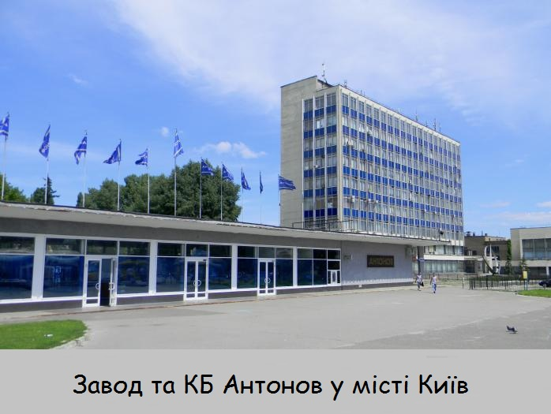

Держа́вне підприє́мство «Анто́нов» — український авіабудівний концерн, що об'єднує конструкторське бюро, комплекс лабораторій, експериментальний завод та випробувальний комплекс, для розробки та сертифікації літаків. З 4 квітня 2015 р. входить до складу державного концерну «Укроборонпром».
31 травня 1946 року постановою ЦК ВКП(б) і Ради Міністрів СРСР затверджене рішення колегії Міністерства авіаційної промисловості (МАП) про створення Дослідного Конструкторського Бюро (ДКБ-153) на Новосибірському авіаційному заводі й про призначення Антонова Олега Костянтиновича Головним конструктором. Одночасно постанова мала завдання створити сільськогосподарський літак СХ-1 (Ан-2), перший політ якого відбувся 31 серпня 1947-го року. Крім цієї машини і її модифікацій, у Новосибірську були створені й побудовані на дослідному виробництві малою серією планери А-9 і А-10.
У період 1957–1959-го років створений пасажирський літак Ан-24, що вперше злетів 20 жовтня 1959-го року. У наступні десятиліття на цьому літаку виконувалося до 30 % пасажирських перевезень у Радянському Союзі. Ця винятково успішна машина стала базою для створення таких літаків, як транспортний Ан-26, аерографічний Ан-30, призначений для високогірних аеродромів Ан-32 й інших. Наприкінці 1960-го року ДКБ почало розробку літака Ан-22 «Антей» — першого у світі широкофюзеляжного літака. Ан-22 за своїми розмірами перевершував усе, що робилося до того часу в авіації й вимагав здійснення значного обсягу експериментальних робіт і вирішення кількох конструкторських і технологічних проблем. Перший політ «Антея» відбувся 27 лютого 1965-го року. Його серійне виробництво здійснювалось на Ташкентському авіаційному заводі.
1976-го року спеціально для умов високогір'я й жаркого клімату був створений транспортний літак Ан-32 як нова модифікація серійного Ан-26. Ці машини стали особливо популярними в Індії, країнах Латинської Америки й Африки. Створення важкого далекого транспортного літака Ан-124 «Руслан» колектив розпочав 1971-го року, а 1982-го року ця машина вперше злетіла. У будівництві дослідних зразків брали участь Київський, Ташкентський, Ульянівський авіаційні заводи. Для комерційних вантажних перевезень на базі літака Ан-124 був створений і сертифікований цивільний варіант Ан-124-100.
4 квітня 1984-го року помер Олег Костянтинович Антонов. 19 листопада підприємству було присвоєне ім'я О. К. Антонова.
Підприємство почало створення універсального надважкого транспортного літака Ан-225 «Мрія», призначеного для транспортування великогабаритних виробів у зібраному вигляді загальною масою до 250 тонн, зокрема й орбітальний корабель ракетно-космічної системи «Енергія-Буран». Ан-225 був спроектований і побудований за 3 роки. У грудні 1988-го року він зробив перший політ. У травні 1989-го року виконані польоти з «Бураном» на Байконурі, у червні літак з «Бураном» взяв участь в авіаційному салоні в Ле Бурже. Нині Ан-225 виконує комерційні перевезення в складі авіатранспортного підрозділу ДП «Антонов».